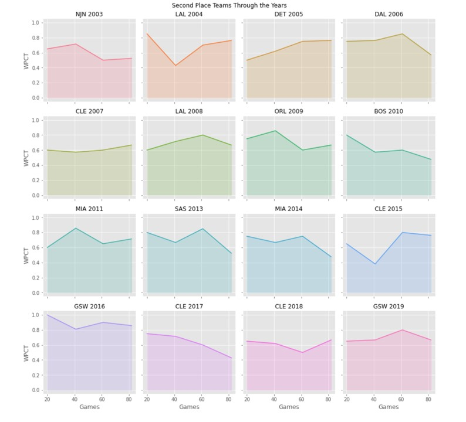
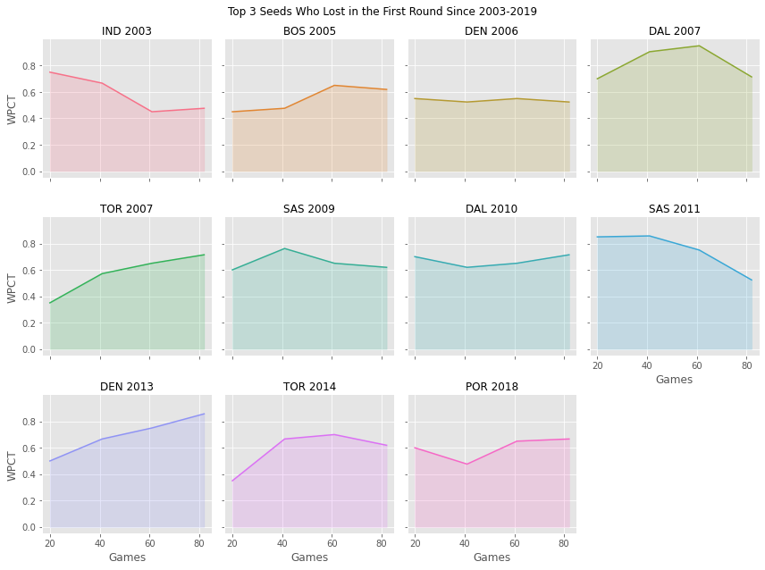
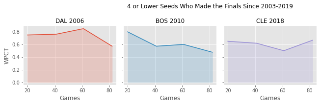
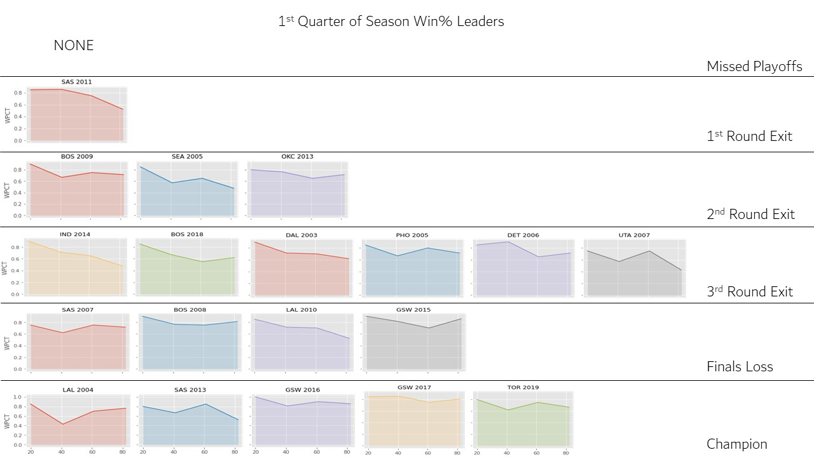
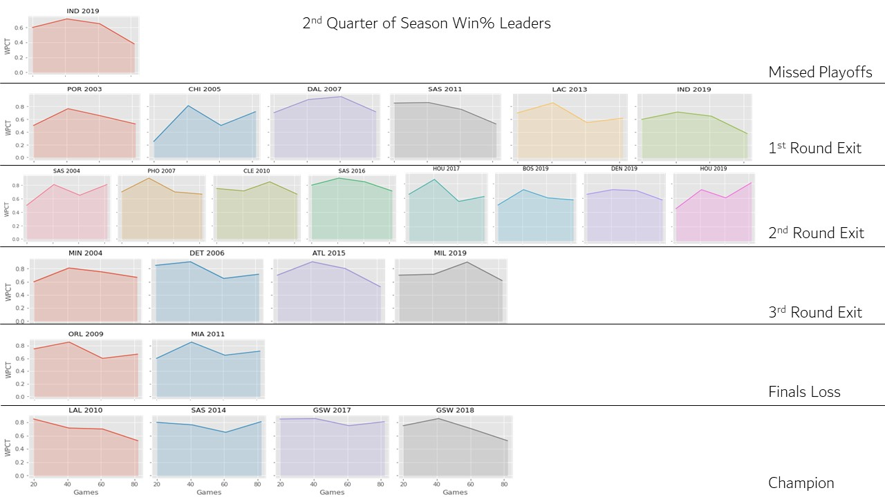
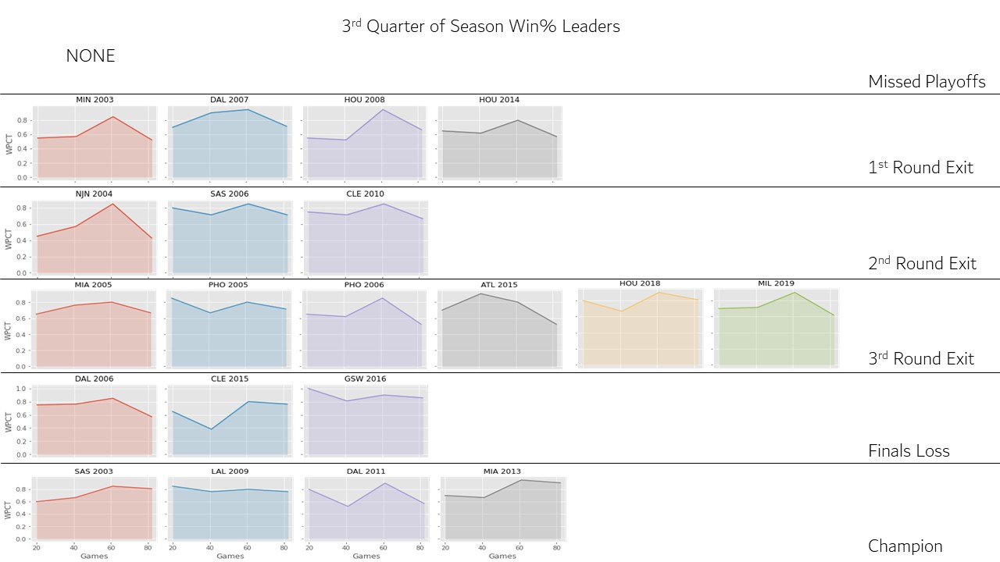
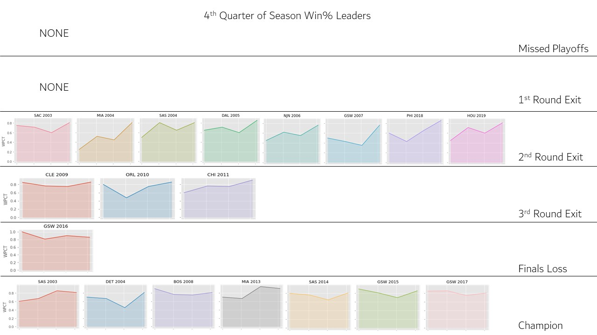
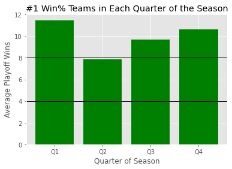
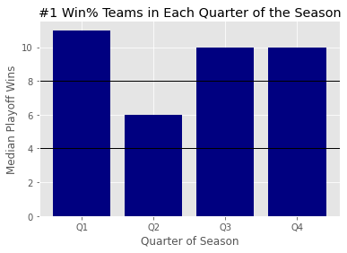

NBA Projects
What's the Best Time of the Season for an NBA Team to get Hot?
Every NBA season, teams inevitably go on hot streaks and cold streaks, which tends to lead to a lot of overreaction by fans, media, and even teams themselves. This cycle left me wondering: what is the best time for a team to get hot? Should a team want to start strong and rest before the playoffs or is it better to enter the playofs with momentum, having just won a lot of games? To answer this question, I divided each NBA season going back to 2003 (with the exception of shortened 2012 and 2020 seasons) into 4 quadrants and found each team's win percentage in each quadrant. In the images below, we can explore the effect of winning in each of these quadrants on having success in the playoffs.
Season Trajectories of NBA Champions Through the Years
Season Trajectories of NBA Second Place Finishers Through the Years
Season Trajectories for Top 3 Seeds who Unexpectedly Lost in the First Round
Season Trajectories for 4 or Lower Seeds who Made Unexpected Runs to the Finals
Playoff Result of the Top Team in Quadrant 1 Through the Years
Playoff Result of the Top Team in Quadrant 2 Through the Years
Playoff Result of the Top Team in Quadrant 3 Through the Years
Playoff Result of the Top Team in Quadrant 4 Through the Years
Average Playoff Wins for the Top Team in Each Quadrant Through the Years
Median Playoff Wins for the Top Team in Each Quadrant Through the Years
Looking through these images, we can notice some interesting trends in the data. Through looking at the champions and runners-up over the years, no clear pattern emerges. Teams do not necessarily need to have a specific trajectory to the playoffs in order to have success, which even if it doesn't tell us how to view team hot and cold streaks, it still tells us that each team is different and shouldn't neccessarily be discussed and compared as they are. So-called "darkhorse" teams that had unexpected success in the playoffs tended to peak early in the season and trail off towards the end, which explains their lower seeding in the playoffs. Looking at the playoff results of each of the 4 quadrants, Q4 leaders produced the most champions and is the only quadrant to not have any team miss the playoffs or lose in the first round. It isn't necessarily required that a team finish strong in order to succeed, but the data shows it clearly helps.